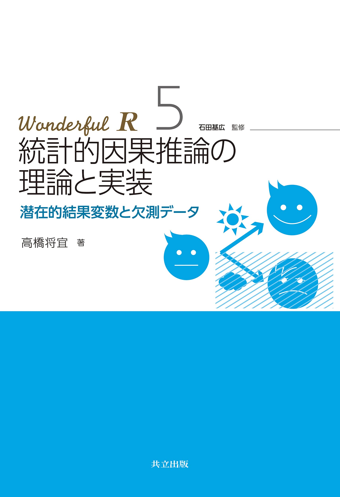

プレゼミ2023
第2回 研究、仮説、
実証会計
本日の講義内容
本日の目標
- 実証研究とはどんなものかを理解し、他人に説明できる。
- 実証研究で扱える研究課題を理解し、研究課題を適切に設定できる。
- 良い研究課題が持つべき特性を理解し、その特徴を備えた研究課題を設定できる。
本日の到達度検証課題
第2回講義の到達度検証のための課題は、以下の通り
- 興味をもてそうな研究課題RQを設定する。
- 作業仮説を構築し、他の人に説明できる。
- 定量データを用いて仮説を検証する方法を説明する。
- 上で立てた研究課題がよい研究課題かどうかを検討し、評価する。
第2回講義の目次
実証研究・実証会計
実証研究とは？
教科書「Rによる計量政治学」の内容を「会計学」に置き換えてみる。
- 「計量会計学」という言葉は一般的ではなく、会計学の世界では「実証的会計研究」とか「実証会計学」
- 社会科学で、社会で生じる現象（経営現象や会計実務とか）を数値化して分析することを計量化(quantification)
- 計量化されたデータを用いて社会現象を説明しようとするアプローチを計量分析(quantitative analysis)
計量分析の手法は、統計学や計量経済学などの数理的な手法を用いて社会現象を説明
実証会計
会計とは
- 経営活動から生み出される価値の変化を貨幣的に計測・記録し、その情報を整理し、集約することで、
- 最終成果物として報告書(B/SとかP/L)を作成し、
- それを利害関係者に報告することで、
- 投資意思決定に役立つ情報提供や、利害関係者間の利害調整を目的とした一連のプロセス
を意味します。
この会計という経営実務を研究対象とした学問を会計学(accounting)といいます。
会計学の領域
- 会計の歴史を研究対象とする会計史 (accounting history)
- 会計の計算構造を研究対象とする計算構造研究 (accounting structure)
- 簿記そのものを研究対象とする簿記論 (bookkeeping)
- 会計の実務を説明し予想するための理論の構築を目指す事実解明的な会計研究 (positive accounting research)
などがある。
事実解明的な会計研究
公表された情報を計量分析の手法を用いて分析する会計研究を、実証会計学 (archival based empirical accounting)とか、単に実証会計と呼びます。
実証会計以外の事実解明的な研究には、実験により生成されたデータを分析する実験会計研究 (experimental accounting)、
数理モデルを用いて行われる分析会計研究 (analytical accounting)
などがあります。
研究の場である学術雑誌
会計TOP5
- The Accounting Review (TAR)
- Journal of Accounting and Economics (JAE)
- Journal of Accounting Research (JAR)
- Review of Accounting Studies (RAST)
- Contemporary Accounting Research (CAR)
五大誌に掲載されている論文の大部分が、会計情報を用いた計量分析
研究の場である学術雑誌
北米以外で発行されている学術雑誌には、定性的研究も多い。
- Accounting, Organisation snd Society (AOS)
- European Accounting Research (EAR)
- British Accounting Research (BAR)
- Critical Accounting Research (CAR)
しかし松浦は社会学について語れる知識がないので沈黙する
実証会計研究の始まり
会計研究の世界では、1960年頃までは規範的研究(normative research)という「〇〇するべき」という主張をする研究が主流だった。
1968年にJournal of Accounting Researchに掲載されたBall and Brown (1968) An Empirical Evaluation of Accounting Income Numbers
以後、実際に会計情報は意思決定者の役に立っているのかをデータを使って確かめる研究、いわゆる実証研究が主流となった。
実証研究に必要な知識
実証的会計研究を行うために必要な知識・技術
- 会計基準・会計理論
- ミクロ経済学（ゲーム理論、契約理論、情報の経済学）
- 計量経済学
- ファイナンス理論（コーポレート・ファイナンス）
- プログラミング
学術雑誌
学術研究が掲載された研究雑誌(ジャーナル)のうち、査読(referree)制度を採用しているものを査読付き雑誌(referreed journal)という。
- 匿名の査読者が審査を行い，投稿論文を雑誌に掲載するかどうかを審査
- 査読を突破した高品質な論文だけが雑誌に掲載されるが、査読の時間が結構長く，投稿してから雑誌に掲載されるまで1年〜3年程度かかることもざら
会計研究の査読誌
会計研究の査読誌2
ファイナンス研究の査読誌
マーケティング研究の査読誌
- Journal of Marketing (JM)
- Journal of Marketing Research (JMR)
- Journal of Consumer Research (JCR)
- Marketing Science (MS)
組織・戦略研究の査読誌
- Academy of Management Journal (AMJ)
- Academy of Management Review (AMR)
- Administrative Science Quarterly (ASQ)
- Organization Science (OS)
- Management Science (MS)
- Strategic Management Journal (SMJ)
日本の会計・ファイナンスの査読誌 (の一部)
日本のマーケティングの査読誌 (の一部)
日本の組織・戦略の査読誌 (の一部)
研究テーマの選び方
問をたてる
プレゼミの達成目標は、経営事象に関する問題を発見し、その問題がなぜ生じているのか、どうすれば解決できるのかを考えることができること
研究課題の種類について学びます。
- 実証的問題
- 規範的問題
- 分析的問題
リサーチ・クエスチョンの種類
リサーチ・クエスチョン(research question: RQ)とは、研究対象となる会計に関する、抽象度の高い問いのこと
RQが決まれば、その問いに答えるために、何をするべきなのかが決まる。たとえば、
- 大きな監査法人は、財務報告の質を高めているのか？
- ステルス値上げと値上げに購買意欲に与える影響は同じか？
- 女性管理職を増加させるべきか？
実証的問題
- 実証的問題では、事実を調べることが目的
- たとえば、「のれんの非償却はM&Aを促進させるのか」という問いに対して、何をすれば答えが見つかる？
- 実証的問題を扱う会計研究でも、定量的な研究だけでなく、インタビューによる定性的な研究もあります。参与観察研究はあまり見ない
- 事実に注目する研究となるため、主観的な要素はできるだけ排して、観察されたデータや発言といった客観的なデータを用いることが多い
規範的問題
- いわゆる「べき論」を扱う問題で、日本の会計研究では多く行われている研究
- たとえば、「のれんは償却すべきか」という問いに対しては、ある前提条件の下で、のれんの償却を行うことで、社会厚生が増加する、といった主張
- 「誰にとっての」メリットを重視するべきなのか、という問題がでますが、そこは研究者の価値判断によって決まる
- したがってプレゼミでも、規範的問題を実証的問題に変換する方法を考え、規範的問題を直接扱わない。
分析的問題
分析的問題は、まだ起こっていない、観察されていない現象を扱うことができる。
分析的問題では、モデル(model)を用いて、現象の起こりうるメカニズムをみる。
基本的には、関心のある問題を抽象化して数式で表現し、前提条件と仮定を設定し、その問題を解くことで得られた結果を解釈する
正直、松浦の手に負えないので、プレゼミでは扱わない。
「よい研究テーマ」の見つけ方
政治学のMonroe (2000, pp.8–10)によると、
- 明快さ (分かりやすいテーマが良い)
- 検証可能性 (誰でも同じ分析ができるようにする)
- 理論的重要性 (難しい)
- 実用性 (あればよいけど、気にしない)
- 独創性 (本当は大事だけど今回は無視)
がよい研究テーマに必要な要素らしいです。
プレゼミでの「よいテーマ」
- 明快な推論で導き出された仮説を、
- 客観的なデータを用いて、
- 適切な手法で分析し、
- その結果を解釈し、
- 経営実務にどういう影響・貢献があるのか、
を主張できれば、卒業論文になる。
プレゼミでの「よいテーマ」
- その前段階として、プレゼミでは検証可能性を重視する。
- その論文を読めば、他の人でも同じ分析を行うことが可能であり、誰でも追試が行えることが重要
- そのためには、データの集め方や変数の作り方、データ分析のプロセスが明確にしめされており、それを自分でもすぐに再現することができる、ということ
規範的問題から実証的問題への変換
- 「べき論」は研究者の価値判断が大きく反映され、その主張する価値は主観的で検証不可
- 規範的問題を実証的問題になるように問い方を変える
- 参照枠組みを変える方法
- 「会計は投資意思決定に役立つべきである」という問いは「会計は株主のためのものである」という価値判断が含まれている。
- 「会計は投資意思決定に役に立っているのか？」とすれば検証可能
規範的問題
- 規範的問題の前提条件に注目する方法
「会計は投資意思決定の役立つべきである」という規範的記述の背後には、
- 会計は投資家のためのものである
- 投資家が会計(情報)を使えば儲かる。
- 投資家の投資が活発になれば、経済は活性化する。
という前提条件があると考えられます。
これを実証的な問題にするには、
- 会計(情報)の主な利用者は投資家なのか？
- 会計情報を使えば儲かるのか？
- 投資の役に立つ会計情報を提供することで、経済は活性化するのか？
のように、規範的問題の背後にある前提条件を検証可能な問いに変えることで、実証的な問題になります。
パズルを探す
- パズル(puzzle)とは、ある現象を説明するために、既存の理論では説明できない現象のこと
- たとえば配当パズル(dividend puzzle)とは、配当がなぜ存在するのか、という問題 配当は、株主に対する利益配分の一つであり、株主にとっては配当が高いほうがよいはずです。 しかし、実際には、配当が高いほど株価が低くなるという現象が観察されます。
- パズルは既存の理論では説明できないので、研究題材としては非常に魅力的
- だが簡単には見付からない。
研究論文の構成
実証研究の論文構成は、ほぼ以下のような構成となっています。
- イントロダクション
- 先行研究
- 理論
- 仮説
- 対抗仮説
- 作業化
- 証拠
- 結論
このうち、1〜4は、研究の背景を説明する部分であり、5〜7は、研究の主要な部分であり、8は、研究のまとめです。
Libby’s Box
Libby’s Box
監査研究のLibbY’s Box
たとえば、監査研究の一例を挙げてみると、次のような図になります。

監査と財務報告の質
What is Theory?
理論とは
理論とは「原因と結果について一般的な論述」で、「〇〇であるとき、△△が起こる」というようなものです。 原因と結果の関係を「説明変数\(X\)」(explanatory variable)と「応答変数\(Y\)」(response variable)の関係として表現します。
\[ \begin{aligned} X \Longrightarrow Y \end{aligned} \]
推論を作る際には，どれだけ説得力があり納得できる仮定を設定するかが重要となります。 仮定のない推論など役に立たないからです。
「よい理論」とは？
実証研究のリサーチ・デザイン(research design)のプロセスは次のような手順になります。
- パズルを見つける（簡単には見付からないです）
- パズルを説明するための複数の前提条件を使って理論を作る。（ほぼ先行研究を参考にする）
- 理論から作業仮説(working hypothesis)を引き出す。
- 作業仮説を検証するためのデータを収集
- データで作業仮説を検証し、理論の妥当性をチェック
理想的にはこうなるでしょうが、現実にはこんなにうまくいきません。
現実的な「よい理論」とは？
- 興味/疑問のある経営現象を見つける。
- なぜおその経営現象が発生するのか仮説を立てる。
- その仮説を最もらしいものにする理論/ストーリーを考える。
- データを集めて仮説を統計的に顕彰する
という風に行われることが多い（と思います。たぶん）
良い理論がもつ性質
良い理論・推論が持つべき性質は次のようなものです。
- 反証可能であること
- 観察可能な予測が多いこと
- 具体的であること
- シンプルであること
以下ではそれぞれについて簡単に説明します。
反証可能であること
「反証可能性」(falsifiability)という科学で最も重要な特性の1つを確保する必要があります 1 。
つまり，論文を読んだ人ならだれでも，「この理論は間違っている」ということを示すことができるようにする必要があります。 反証可能性がない主張は占いと変わりません。
観察可能な予測が多いこと
結果として発生する現象が観察可能である予測を行う必要があることを示しています。 当然ですが，自分の主張を証拠を用いて説得力を高めようとしているのですから，その予測が当たっているのかどうかを確認できる必要があります。
具体的であること
「業績が悪くなる」のようにあいまいな表現ではなく，「昨年度と比べて利益が減少する」とか「累積リターンがマイナスになる」といったように，具体的な予測を行う必要があります。「リスク」とか「パフォーマンス」とか「悪くなる」とか「加速する」といったあいまいな言葉は常に定義してから使うようにしましょう。
シンプルであること
理論はシンプルでなければなりません。 理解しやすく，使える範囲が広く，反証可能性が高い理論は，シンプルになっていきます。
基本的には，先行研究で使われている理論を援用することが多い経営学・会計学では，先行研究で用いられた理論や推論に無駄がないかどうか，よりシンプルにいえないかどうか，を考えることが多いです。
理論をシンプルにするには，前提となる条件を少なくする必要があります。
因果法則の3つの条件
因果関係(causality)と相関関係(correlation)の違いを理解しておきましょう。
因果関係は、近年の社会科学領域の研究で最も注目されているキーワードでしょう。
もともと因果関係を特定し、推定する研究は数多く行われてきましたが、近年になって発達した計量経済学や実験経済学の手法を使って、より厳密に因果関係を特定しようとする研究が増え、因果関係を適切に特定することの重要性が認識されるようになりました。
因果推論の書籍
例えば、こんな本が近年出版されています。



因果関係
因果関係とは、原因(causal)と結果(outcome)の関係のことです。
- 正確に言うと、ある要因\(X\)を操作するとき、別の要因\(Y\)が変化することです(Imbens and Rubin, 2015, p.4)。
- 因果関係を考える際には、「効果をもたらした原因」(causal of effect)と「原因のもたらす効果」(effect of cause)の両方を考える必要があります。
- 例えば、ある企業が従業員の給料を上げたとします。従業員の給料が上がったことが「効果をもたらした原因」であり、給料増加で従業員のモチベーションが上がったことが「原因のもたらす効果」
- 定量的な研究では、「原因のもたらす効果」を分析することが多いです。
因果関係の3条件
因果関係があると考えるためには、3つの条件を確かめる必要があります。
- 原因が結果より先に起こる。
- 原因と結果が共変する。
- 原因以外の重要な要因が変化しない。
この因果関係を記述するものを理論といいます。
Hypothesis and Test
仮説とは
科学的には，「理論」と「仮説」とは同じものです。 反証されずに生き残った理論を仮説(hypothesis)と呼びます。
この「仮説」をより具体的にしたものを「作業仮説」(working hypothesis)
- 作業仮説とは，自分が使える特定の変数についての記述
- 「もしこの仮説が正しければ・・・のはず」
- 理論より作業仮説の方が具体的である
- 仮説から引き出される観察可能な予測について述べる
作業仮説
たとえば「監査の質が高いほど，財務報告の質が高くなる」という理論から，作業仮説を引き出してみましょう。 この文章の中で，
- 監査の質
- 高い
- 財務報告の質
- 高い
という4つの用語を，測定可能な尺度にして，その高低を定義する必要があります。
作業仮説の例：監査
- たとえば，監査の質を「監査報酬額」で測定して，財務報告の質を利益操作の程度で測定
- 利益操作の程度を異常アクルーアルで代理
作業仮説：監査報酬が同業他社平均より高い企業ほど，異常アクルーアルの絶対値が小さい
議論すること
- 経営学を学んできた中で、疑問に思った現象や経営理論を挙げてください。
- それを作業仮説に落とし込んでください。
- 作業仮説を顕彰するために、どんなデータをどのように分析すれば、知りたいことを知ることができるか、考えてみてください。
- どんな結果がでれば、自分の作業仮説が正しいと言えるか、考えてみてください。